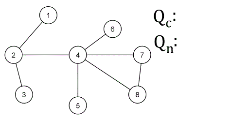

Problem Statement
Many students have difficulty visualizing graph algorithms. It is also difficult to construct graphs to test code on. Since graphs are a fundamental computer science topic, it is important for students to build a strong foundation.

"Level-based BFS example" by Jakob Ned is licensed under CC BY-SA 4.0 

 .
.